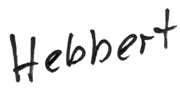

Di 01.09.2026
14:00–17:15 Uhr
Willy-Brandt-Haus R. 1.02
14:15 / 14:45 / 15:00 Uhr
Cineworld, Kemnastr. 3
15:00 / 15:30 Uhr
Cineworld, Kemnastr. 3
15:00 Uhr
Netzwerk Bürgerengagement, Oerweg 38, Recklinghausen
Offenes Treffen von Freiwilligenagentur und Selbsthilfe-Kontaktstelle Recklinghausen. Austausch, Begegnung, Diskussion — für alle, die sich freiwillig in Ehrenamt und Selbsthilfe engagieren oder dies noch tun wollen. Einfach vorbeikommen, keine Anmeldung erforderlich.
17:30 / 18:00 / 18:15 / 20:00 Uhr
Cineworld, Kemnastr. 3
17:40 / 20:45 Uhr
Cineworld, Kemnastr. 3
17:45 / 18:15 / 20:15 Uhr
Cineworld, Kemnastr. 3
19:00 Uhr
Gastkirche
Täglich begegnen uns im Alltag Gebrauchsanweisungen: für die Kaffeemaschine, die Waschmaschine, den Fernseher, den Mixer und, und, und…
Aber gibt es auch schon Gebrauchsanweisungen für den einzelnen Menschen oder für das „reibungslose, unfallfreie“ Miteinander? In unserer interaktiven Ausstellung wollen wir mit Euch der Frage nachgehen, wie solche Regeln für den Umgang mit uns als Individuen aussehen könnten.
Und dann bekommt Ihr die Möglichkeit, eine für Euch besonders wichtige Aussage auf ein T-Shirt zu drucken. Der Ausstellungsraum wird zur Produktionsstätte.
Die T-Shirts verbleiben dann bis zum Ende des Aktionszeitraums in der Ausstellung. Es entsteht dadurch eine „Wachsende Galerie menschlicher Pflege- und Warnhinweise“: Jedes gestaltete T-Shirt, das im Raum verbleibt (oder als Foto
19:30 Uhr
Cineworld, Kemnastr. 3
täglich mehrere Zeiten
Cineworld, Kemnastr. 3
täglich mehrere Zeiten
Cineworld, Kemnastr. 3
täglich mehrere Zeiten
Cineworld, Kemnastr. 3
täglich mehrere Zeiten
Cineworld, Kemnastr. 3
täglich mehrere Zeiten
Cineworld, Kemnastr. 3
täglich mehrere Zeiten
Cineworld, Kemnastr. 3
täglich mehrere Zeiten
Cineworld, Kemnastr. 3
Mi 02.09.2026
12:00 / 14:15 / 14:45 / 15:15 Uhr
Cineworld, Kemnastr. 3
13:00 Uhr
Herner Straße 45659 Recklinghausen
Am 2. September 2026 führt der ADFC Recklinghausen wieder ein Pedelec Fahrsicherheitstraining durch
14:30 Uhr
Volkshochschule, Herzogswall 17, 45657 Recklinghausen, Deutschl
Du bist herzlich eingelad
15 Uhr
RETRO STATION
Vor einigen Jahren wurde das stadtgeschichtliche Museum unter dem Namen RETRO STATION wiedereröffnet. Die Sammlung selbst blickt jedoch auf eine mehr als 100-jährige Geschichte zurück. Nicht allein, dass die Ausstellungsstücke zu sehr unterschiedlichen Zeiten in die Sammlung kamen, häufig sorgten auch besondere Schenkungen oder Ereignisse für Zuwachs. Der Kuratorinnen-Rundgang mit Dr. Angelika Böttcher am 2. September um 15 Uhr lädt zur Erkundung der verschiedenen Sammlungsgeschichten ein. Die Anmeldung unter stadtgeschichte[at]recklinghausen.de wird erbeten.
16:00 Uhr
Rathausplatz 4 45657 Recklinghausen
20 - 39 km · < 15 km/h — Für zwei Stunden mit netten Menschen auf dem Rad unterwegs 😊
17:00 / 19:30 Uhr
Katy Perry: The Livetimes Tour - Live from Paris (englische Originalversion mit deutschen Unte
Cineworld Kino
Cineworld, Kemnastr. 3
17:15 Uhr
Cineworld, Kemnastr. 3
18:00–21:00 Uhr
Willy-Brandt-Haus R. 0.20
Do 03.09.2026
19:00 Uhr
Demokratie-Fitnesstraining mit Isabelle Paul
Weitere Tipps
Wildermannstr. 59, Recklinghausen
Das demokratische Einmaleins kann nicht mehr vorausgesetzt werden. Doch Demokratie-Training macht Spaß. Die Evangelische Familienbildung der Diakonie im Kirchenkreis Recklinghausen tritt gemeinsam mit der Demokratie-Werkstatt-RE den Beweis an. Dabei geht es darum, das Wissen in konkrete Handlungsoptionen umzusetzen. „Democracy Fitness“ trainiert aktives Zuhören, Meinung äußern, Mut zur Beteiligung, Empathie- und Kompromissfähigkeit sowie Umgang mit unterschiedlichen Meinungen. In 30 Minuten-Intervallen werden die Teilnehmenden fit für herausfordernde Wortwechsel und Begegnungen in der Nachbarschaft, am Arbeitsplatz, im Verein oder in sonstigen Alltagssituationen. Die Teilnahme ist kostenlos. Anmeldung unter www.familienbildung-kreis-re.de
WO : Kinderschutzbund, Wildermannstraße 53
WANN : D
19:00 Uhr
LINE DANCE: Tschüss Sommer!
Stadt RE
Altstadtschmiede
Tauche ein in die mitreißende Welt des Line Dance! Der Tanz ist perfekt für alle, die Spaß an Bewegung haben. Die Kurse eignen sich auch für Menschen mit Behinderung; jede*r ist willkommen, jede*r kann mitmachen. In Kooperation mit Altstadtschmiede e. V. und TanzREvier Pompös Foto: KI
täglich mehrere Zeiten
Cineworld, Kemnastr. 3
täglich mehrere Zeiten
Cineworld, Kemnastr. 3
Fr 04.09.2026
09:00–12:15 Uhr
Willy-Brandt-Haus R. 01.03
12:00 Uhr
ADFC Infoladen - Börster Weg 38a 45657 Recklinghausen
Jeden ersten Freitag im Monat bietet der ADFC im Infoladen, Börster Weg 38a, 45657 Recklinghausen in der Zeit von 14.00 bis 17.00 Uhr seine beliebte Fahrradcodierung an
15:00–18:00 Uhr
Willy-Brandt-Haus R. 0.05
18:00–20:15 Uhr
Willy-Brandt-Haus R. 0.02
19.30 Uhr
Rathausplatz
Baumanns Hitparade 2026 Jede Spielzeit wieder ein Hit sind unsere Open-Air-Konzerte im Spätsommer, mit denen wir unter freiem Himmel den Beginn der Saison feiern. In dieser Spielzeit hat GMD Rasmus Baumann in „Baumanns Hitparade 2026“ wieder ein Programm zusammengestellt, dass die Freuden der klassischen Musik mit Highlights aus Filmmusik und mehr kombiniert. Klassik-Stars wie Mozart und Grieg treffen auf Ikonen der Filmmusik wie John Williams und Hans Zimmer. Bekannte Melodien in zum Mitfeiern, Genießen und Mitraten mit GMD Rasmus Baumann und der Neuen Philharmonie Westfalen. Das wird ein Abend, den Sie so schnell nicht vergessen werden. GMD Rasmus Baumann , Leitung Foto: Melissa Pieper
19:00 Uhr
Recklinghausen
19h-21h
LichtARTs Malen mit Licht
Stadt RE
KA-Labor für Architektur und Kunst
Was wäre, wenn Sie mit Licht malen könnten? In einem abgedunkelten Raum entstehen mit Lichtquellen, Bewegung und Kamera faszinierende Bilder, die mit bloßem Auge kaum sichtbar sind. Wir experimentieren mit Lichtspuren, Farben, Formen und Bewegungen und entdecken dabei ganz nebenbei die spannende Verbindung von Fotografie, Kunst und Technik. Wenn möglich, haben Sie bitte ein Smartphone dabei. Wer hat Lust auf ein ungewöhnliches kreatives Experiment? Anmeldung notwendig da begrenzte Plätze bei Ursula Thielemann Info@ka-labor.de Für Erwachsene | 2,5 Stunden | 59 € inkl. Material KA-Labor – Kunst, Architektur, Technik ausprobieren. Ohne Vorkenntnisse. Mit Neugier.
20:00 Uhr
Gastkirche
siehe Website
Sonne, Mond und Sterne (ab 5)
Stadt RE
Sternwarte
Der Mond und die funkelnden Sterne leuchten uns in der Nacht. Wie der Himmel sich über uns bewegt und was Planeten sind, wird im Planetarium anschaulich erklärt. von Christian Pokall Beginn der Veranstaltung 16.00 Uhr im Planetarium Die Kasse wird 30 Minuten vor Beginn einer Veranstaltung geöffnet. Eintrittspreis: 3,00 € (1,80 € ermäßigt) Für Kinder, Schüler und Studenten ermäßigt. Ebenso für Inhaber des Recklinghausen-Passes („RE-Pass“), Inhaber der Ehrenamtskarte und Freiwilligendienstleistende.
Sa 05.09.2026
10:00 Uhr
Gasthaus
11:00 Uhr
Willy-Brandt-Haus
Auch in diesem Jahr findet der SommerLeseClub (SLC) in der Stadtbibliothek Recklinghausen statt. Anmeldungen sind ab Mittwoch, den 1. Juli in der Hauptstelle der Stadtbibliothek in der Augustinessenstraße 3 oder in der Zweigstelle Am Neumarkt 19 möglich. Zum SommerLeseClub können sich Teams oder einzelne Personen jeden Alters anmelden. Voraussetzung ist ein Bibliotheksausweis, der aber bei der Anmeldung kostenfrei erstellt werden kann. Für jedes gelesene Buch, jedes gehörte Hörspiel oder jede besuchte Veranstaltung erhalten Mitglieder einen Stempel in ihr SLC-Logbuch.Die Logbücher müssen bis spätestens Samstag, den 29. August um 14 Uhr in einer der beiden Standorte der Stadtbibliothek abgegeben werden. Zum Abschluss des SommerLeseClubs (SLC) lädt das Team der Stadtbibliothek am Samstag, de
11:00 Uhr
Stadtbibliothek, Augustinessenstraße 3
Am Samstag, den 5. September 2026 ab 11 Uhr findet wieder ein Vorlesepicknick statt. Veranstaltungsort ist der Lesegarten in der Sterngasse neben der Stadtbibliothek. Kinder ab drei Jahre und ihre Familien sind eingeladen, es sich draußen gemütlich zu machen und Geschichten zu lauschen. Picknickdecken, Snacks und Getränke dürften gerne mitgebracht werden. Auf dem Programm stehen zwei Bilderbuchgeschichten, die von Mut und Selbstvertrauen erzählen: "Die kleine Hummel Bommel" wird wegen ihrer winzigen Flügel ausgelacht und traut sich nicht zu fliegen. Doch bald erkennt sie in dem Buch von Maite Kelly, dass sie keine größeren Flügel, sondern nur eine Portion Mut zum Fliegen braucht. In Heidi Leenens Geschichte "Emma - Ohne dich wäre die Welt nur halb so schön" geht die kleine Schnecke Emma is
12.05 Uhr
Orgelmatinee
Stadt RE
Probsteikirche St. Peter
25. Internationele Orgeltage Recklinghausen "...Nicht nur Orgel" Orgelmatinee Milkica Radovanovic (Norwegen)
15:30 Uhr
Cineworld, Kemnastr. 3
18:00 Uhr
Salsa am Stadthafen open air edition
Weitere Tipps
Recklinghausen Süd Stadthafen
Am 05.09.2026 tanzen wir wieder ab 18Uhr am Hafen in Recklinghausen‼️🌊🌊🌊
Unser Gast ist diesmal
💃🔝MANDY POMPÖS🔝💃
Mandy vom TanzREvier Pompös bringt Latin-Vibes an den Stadthafen! 💃🔥
PROGRAMM:
Freut euch ab 18 Uhr auf
Latin Solo und Cha-Cha-Cha –
mit viel Rhythmus, Spaß und natürlich jeder Menge Hüftschwung!💃🔥
Und ab 19 Uhr auf unser SOCIAL💃🕺
jeder ist willkommen, auch Anfänger❗️
ja
bis.... 🔥🔥🔥🎶🎶🪕🪕🎊🎊
😉vermutlich ihr schlapp macht😂
Tanzt mit uns beim Re(h)🦌am 🌊
und lasst uns gemeinsam einen unvergesslichen Abend kreieren❤️❤️
🔥‼️VAMOS A BAILAR‼️🔥
📢Wir freuen uns auf euch alle
♥️♥️♥️♥️♥️
🕺TIM 📸 & 🕺MARTIN🎧
Unsere Benefits:
🆓️🚗🚗🚗
🌊direkt am Rhein-Herne-Kanal
🆓️ Eintritt - Spende erbeten🙏
sehr große Tanzfläche💃🕺💃🕺
guter Musikmix...🎸🎶🎧🔝📢
🏖 🍹🍟chillige Strandbar
mit
19.30 Uhr
Pawel Popolski: PolkaMania!
Stadt RE
Ruhrfestspielhaus, Kassiopeia
In „PolkaMania!“, dem neuen Programm von Pawel Popolski geht wieder „der Post ab durch der Decke!“. Von den rasenden Rhythmen der Cheavy Metal Polka (Chighway to Chell) bis zur chammercharten Electro-Polka (chit me baby one more time) spannt Pawel den musikalischen Bogen „fur der junge und der alte Fans". Nach dem Motto PSPS (Pawel sucht den Polkastar) wird neben einem Schlagzeuger diesmal auch ein weibliches Gesangstalent aus dem Publikum „auf da Buhne gecholt“ um gemeinsam mit Pawel der nächste Polka Chit zu singen. Und natürlich wird mit dem gesamten Publikum wieder ordentlich ein Wodka „in der Fritteuse geschnetzelt“. Foto: StephanPickFotografie
20:00 Uhr
Disco Fox Night mit DJ Stefan
Der Recklinghäuser
Der Recklinghäuser, Königswall 14
Vernissage am 5.9.2026, um 17:00 Uhr Finissage am 31.10.2026, um 15:00 Uhr Ausstellungszeitraum 6.9.-31.10.2026 Freitag 15 – 18 Uhr Samstag, Sonntag und an Feiertagen 13 – 17 Uhr
Kutscherhaus
Christina Buttler (*1997, Bonn) beschäftigt sich in ihrer künstlerischen Arbeit mit dem Auffinden und Überführen alltäglicher visueller Strukturen in die Sphäre der Malerei. Dabei entstehen Bildräume, die von geometrischen, sich ausdehnenden Flächen und rhythmisch wiederkehrenden Formen gekennzeichnet sind. Durch das Verschieben, Ausschneiden und Deformieren motivischer Objekte lösen sich die Werke von einer direkten Wiedergabe von Realität. In der Einzelausstellung GRIP werden unter anderem die rhythmischen Strukturen von Reifenprofilen zum Ausgangspunkt von Christina Buttlers Malerei. Was im Alltag oft unbeachtet bleibt, verwandelt sich in abstrakte Bildräume und eröffnet einen erweiterten Blick auf die Welt – und darauf, wie wir sie sehen.
So 06.09.2026
09:00 Uhr
Rathausplatz 45657 Recklinghausen
20 - 39 km · 15-18 km/h — Diese Tour führt Radfahrende aus Recklinghausen zum Auftakt des Stadtradelns im Ramen einer Sternfahrt zum Kreisgartenbaulehrbetrieb in Horneburg.
10:00 Uhr
Nordseestraße 104, 45665 Recklinghausen, Deutschland
Sommerfest im VestGar
11:00 / 17:15 / 19:45 Uhr
Cineworld, Kemnastr. 3
11:00 Uhr
Cineworld, Kemnastr. 3
12:15 / 12:45 Uhr
Cineworld, Kemnastr. 3
17:15 Uhr
Cineworld, Kemnastr. 3
19:45 Uhr
Cineworld, Kemnastr. 3
Mo 07.09.2026
09:30–12:00 Uhr
Willy-Brandt-Haus R. 0.12
16:00 Uhr
Raum 103 (Großer Sitzungssaal des Rathauses), Rathausplatz 3/4
16:15–17:45 Uhr
Willy-Brandt-Haus R. 0.02
16:15–18:30 Uhr
Bürgerhaus Süd; Werkraum
16:30–18:00 Uhr
Willy-Brandt-Haus R. 2.01
17:00 Uhr
Christuskirche
Einladung in die Christuskirche am Tag nach der Wahl in Sachsen-Anhalt
Erstmals hat eine als gesichert rechtsextrem eingestufte Partei eine Landtagswahl gewonnen. Das verändert unsere Demokratie. W
17:00–18:30 Uhr
Marie-Curie-Gymnasium
17:45–19:15 Uhr
Willy-Brandt-Haus R. 1.02
18:00–19:30 Uhr
Willy-Brandt-Haus R. 0.13
18:15–19:45 Uhr
Willy-Brandt-Haus R. 2.01
18:45–20:15 Uhr
Marie-Curie-Gymnasium
19:30 Uhr
Planetarium
--- fällt leider aus ---
19:30–21:00 Uhr
Marie-Curie-Gymnasium
19:30–21:00 Uhr
Willy-Brandt-Haus R. 1.02
von 9:30 bis 11 Uhr
Familienbüro
Inhalte Die Still- und Trageberaterin Lisa Lantermann beantwortet Ihre Fragen rund um das Thema Stillen, Tragetuch, Beikost, Entwicklung des Kindes uvm. Alle sind herzlich willkommen – auch Geschwisterkinder dürfen gerne mitgebracht werden. Die Teilnahme ist kostenlos.
Di 08.09.2026
09:00–11:30 Uhr
Bürgerhaus Süd; Raum 1
09:30–10:45 Uhr
Willy-Brandt-Haus R. 0.02
15:00–16:30 Uhr
Willy-Brandt-Haus R. 0.15
16:00 Uhr
Ruhrfestspielhaus, Stadtgarten 1 45657 Recklinghausen
20 - 39 km · < 15 km/h — Für zwei Stunden mit netten Menschen auf dem Rad unterwegs 😊
16:00 Uhr
Raum 103 (Großer Sitzungssaal des Rathauses), Rathausplatz 3/4
16:00–17:30 Uhr
Willy-Brandt-Haus R. 0.13
16:30–17:45 Uhr
Willy-Brandt-Haus R. 0.02
16:45–18:15 Uhr
Willy-Brandt-Haus R. 2.01
16:45–18:15 Uhr
Willy-Brandt-Haus R. 0.15
17:00–20:00 Uhr
Bürgerhaus Süd; Werkraum
17:15–18:45 Uhr
Willy-Brandt-Haus R. 0.12
17:30–18:30 Uhr
Gymnastikraum der Anne-Frank-Grundschule
17:45–19:15 Uhr
Willy-Brandt-Haus R. 0.13
18 bis 19:30 Uhr
Familienbüro
In Zusammenarbeit mit der Landesanstalt für Medien NRW findet folgender Elternabend statt: Posten, liken, mobben – Kinder in der Online-Welt Was ist Cybermobbing eigentlich? Wie kann ich mein Kind schützen & wo finde ich Hilfe? Sharenting & sicherer Umgang mit Bildern im Netz Was passiert, wenn Beleidigungen und Anfeindungen nicht auf dem Schulhof enden, sondern im Chat weitergehen? Cybermobbing kann schon Grundschulkinder treffen und viele Eltern fragen sich, wie sie frühzeitig vorbeugen und ihr Kind stärken können. Auch der Umgang mit Fotos im Netz spielt eine wichtige Rolle: Was sollte beim Teilen von Kinderbildern beachtet werden? Und wie lernen Kinder, selbst sorgsam mit persönlichen Daten umzugehen? Dieser Elternabend beantwortet diese Fragen und bietet Tipps für einen sicheren Einst
18:00–19:30 Uhr
Willy-Brandt-Haus R. 0.02
18:00–19:30 Uhr
Willy-Brandt-Haus R. 1.02
18:00–19:30 Uhr
Marie-Curie-Gymnasium
18:15–19:45 Uhr
Willy-Brandt-Haus R. 0.20
18:30–20:00 Uhr
Willy-Brandt-Haus R. 0.15
18:30–20:00 Uhr
Willy-Brandt-Haus R. 2.01
19:00–21:30 Uhr
Willy-Brandt-Haus R. 0.07
19:30 Uhr
Henze100: UNDINE
Stadt RE
Ruhrfestspielhaus, Kassiopeia
Eröffnungsveranstaltung der Konzertreihe Henze100 Carl Reinecke: Sonate e-Moll für Flöte und Klavier op. 167 („Undinesonate“) Anton Rubinstein: Ondine Des-Dur op. 1 Giacomo Orefice: Ondine Des-Dur Cécile Chaminade : L’Ondine Es-Dur op. 101 Claude Debussy: Ondine D-Dur Grete von Zieritz : Nixe Rainer M. Klaas: Ondinitude cis-Moll nach Chopin und Ravel für die rechte Hand allein Hans Werner Henze : Vier Divertimenti aus der Oper „Der junge Lord“. Fassung für zwei Klaviere vom Komponisten Hans Werner Henze: Divertissement aus dem Ballett „Undine“ für Klavier und Orchester. Fassung für zwei Klaviere vom Komponisten Max Streicher (Flöte), Jay J. Wang (Klavier), Rainer Maria Klaas (Klavier)
Mi 09.09.2026
09:30–11:45 Uhr
Bürgerhaus Süd; Werkraum
15:00–15:45 Uhr
Willy-Brandt-Haus R. 0.02
16:00 Uhr
Sitzung des Ausschusses für Wirtschaftsförderung, Liegenschaften, Beteiligungen und Gebäudewirtschaft
Ratssitzungen Politik
Raum 103 (Großer Sitzungssaal des Rathauses), Rathausplatz 3/4
16:00–17:00 Uhr
Willy-Brandt-Haus R. 0.02
16:00–17:30 Uhr
Willy-Brandt-Haus R. 0.13
16:45–18:15 Uhr
Willy-Brandt-Haus R. 0.15
17:00–18:30 Uhr
Willy-Brandt-Haus R. 0.13
18:00 Uhr
Recklinghausen
18:00–19:30 Uhr
Marie-Curie-Gymnasium
18:00–19:30 Uhr
Marie-Curie-Gymnasium
18:15–19:00 Uhr
Willy-Brandt-Haus R. 0.02
18:15–19:45 Uhr
Marie-Curie-Gymnasium
18:30 Uhr
Haus des Kirchenkreises
18:30–20:45 Uhr
Willy-Brandt-Haus R. 01.05
18:45–20:15 Uhr
Willy-Brandt-Haus R. 0.13
18:45–21:00 Uhr
Willy-Brandt-Haus R. 2.01
19:00–20:30 Uhr
Bürgerhaus Süd; Raum 1
19:00–20:30 Uhr
Prosper-Hospital
19:15–20:45 Uhr
Willy-Brandt-Haus R. 0.12
19:30 Uhr
Hörsaal
Das Mittelalter war geprägt durch ein Weltbild, das den Menschen als Mittelpunkt der Schöpfung sah. Auf der Grundlage der antiken Geozentrik verstand man die am Himmel sichtbaren Bewegungen als Ausdru
20:00 Uhr
Altstadtschmiede
Wer Bock auf akustische Rock- und Popmusik hat, ist hier genau richtig. Der Abend startet immer mit einer Opener-Band, die den Einstieg macht.
Anschließend ist die Bühne offen für alle, die akustisch spielen wollen.Ob eigene Songs oder Covers, Solo, Duo oder kleine Besetzung, hier darf jede*r zeigen, was sie/er kann. Einfach zuhören mit einem kalten Getränk ist natürlich auch erlaubt, wir freuen uns über jedes Gesicht an dem Abend!
täglich mehrere Zeiten
Cineworld, Kemnastr. 3
Do 10.09.2026
09:00–11:15 Uhr
Willy-Brandt-Haus R. 01.17
10:30–13:00 Uhr
Bürgerhaus Süd; Raum 2
11:30–13:45 Uhr
Willy-Brandt-Haus R. 0.15
14:00–16:15 Uhr
Willy-Brandt-Haus R. 0.15
15:00–17:00 Uhr
Willy-Brandt-Haus R. 0.20
16:00 Uhr
Stadtbibliothek, Am Neumarkt 19
Am Donnerstag, den 10. September 2026 geht das Bilderbuchkino der Stadtbibliothek in Recklinghausen-Süd, Am Neumarkt 19, in eine neue Runde. Ab 16 Uhr lesen Mitarbeiter*innen im Haus der Bildung für Kinder vor. Die Bilder der Geschichte werden auf eine große Leinwand projiziert. Auf dem Programm stehen die Bilderbücher „Sieben grummelige Grömmels und ein kleines Schwein“ und „Ich bin das Wildschwein“. Iris Wewer ist die Autorin der ersten Geschichte. Das kleine Schwein schleicht sich in das Haus der gefräßigen Grömmels. Doch anstatt gefressen zu werden, gewinnt das Schwein mit freundlichen Worten und lustigen Ideen die Herzen der Grömmels. In der Geschichte „Ich bin das Wildschwein" von Katrin Wiehle lernen Kinder und Erwachsene die wichtigsten Informationen über die borstigen Tiere. Wie h
16:00 Uhr
Raum 103 (Großer Sitzungssaal des Rathauses), Rathausplatz 3/4
17:30–19:00 Uhr
Willy-Brandt-Haus R. 0.15
17:40 / 20:30 Uhr
Cineworld, Kemnastr. 3
18.30 - 19.30 Uhr
Friedhofskapelle
Der Künstler Udo Homeyer verwendet das Mantra als singende Kunstform, die es auch Ungeübten ermöglicht spontan mitzusingen. Ein Mantra hat wenige Worte und eine einfache Melodie. Durch die Wirkung der ständigen Wiederholung bringt uns das Mantra schnell in einen meditativen Zustand. Meditatives Singen ist kraftvoll, heilsam, bewegend und entspannend. Foto: Sybille Ostermann
18:00–19:30 Uhr
Bridgeclub Recklinghausen, Tiroler Str. 1
18:00–19:30 Uhr
Marie-Curie-Gymnasium
18:00–19:30 Uhr
Marie-Curie-Gymnasium
18:00–20:15 Uhr
Willy-Brandt-Haus R. 01.05
19:00 Uhr
Monatstreffen des NABU Recklinghausen
Weitere Tipps
Hohenhorster Weg 51, Recklinghausen
AKTIV WERDEN
Monatstreff des NABU Recklinghausen.
Wir treffen uns jeden zweiten Donnerstag im Monat im
"altes Forsthaus"
45669 Recklinghausen,
Hohenhorster Weg 51
ab 19:00 Uhr.
19:15–20:45 Uhr
Willy-Brandt-Haus R. 0.15
siehe Website
Altstadtschmiede
Die Altstadtschmiede lädt gemeinsam mit der Jazz Ini Recklinghausen wieder zur Jazz Session ein.
Der Abend beginnt wie immer mit einem Opener, danach ist die Bühne frei für alle, die Bock haben, spontan gemeinsam Msuik zu machen!
Wir freuen uns auf euch!
Fr 11.09.2026
10:45–12:15 Uhr
Willy-Brandt-Haus R. 0.02
16:00 Uhr
Gastkirche
16:00 Uhr
Planetarium
In dieser Vorstellung nimmt uns unser Pilot Major Tom mit auf eine Reise in die Nacht, durch das Jahr, zu den Sternbildern und Planeten. Himmelsneulinge von 8 bis 88 Jahren können hier ganz gemütlich
17:00 Uhr
Ruhrfestspielhaus, Otto-Burrmeister-Allee 1
<p>Eröffnung der Literaturtage 2026 Andrea Paluch: Alles für einen Begrüßung: Bürgermeister Axel Tschersich Moderation: Antje Deistler, Literaturgebiet Ruhr Ruth Berlau ist vielen als eine der Mitarbeiterinnen und Liebhaberinnen von Bertolt Brecht bekannt. Dabei zeugt das Leben der dänischen Journal
17:00–18:00 Uhr
Willy-Brandt-Haus R. 0.02
17:00–19:30 Uhr
Willy-Brandt-Haus R. 1.02
19:00 Uhr
Literaturtage Recklinghausen
Weitere Tipps
Augustinessenstr. 3, Recklinghausen
Unter dem Motto "ZeiTRäume" finden ab dem Freitag, 11. September, die diesjährigen Literaturtage Recklinghausen statt. Der Vorverkauf startet am Freitag, 10. Juli.
Bis zum Sonntag, 27. September, stehen zahlreiche Veranstaltungen für Erwachsene, Kinder, Jugendliche und Familien an unterschiedlichen kulturellen Orten im gesamten Stadtgebiet auf dem Programm.
Das Lesefest beschäftigt sich vor allem mit den Fragen: Was berührt und beschäftigt uns in diesen Zeiten? Wie finden wir trotz Krisen zu einem friedvollen und lebendigen Miteinander – lokal und global? Von welcher Zukunft möchten wir träumen und wie diese Träume verwirklichen?
Ein Einblick ins Programm:
Rund 30 renommierte und aufstrebende Autorinnen und Autoren werden erwartet.
Eröffnet werden die Literaturtage im Ruhrfestspielha
19:30 Uhr
PlanetariumEintritt: 12 €, ermäßigt 10 €. Kartenreservierungen unter 02361- 23134 oder info@sternwarte-recklinghausen.de
In der Dunkelheit des Neumonds werden die Sterne klarer und sichtbarer. Lass dich verzaubern von ihrem Verlauf in der Nacht, begleitet von Kristallinstrumenten und Klangschalen. Ihre warmen und sphäri
20:00 Uhr
Backyard-Club e.V., Alte Grenzstr. 153e
<p>Lord Bishop Rocks ist ein Musik-Trio unter der Leitung des in Deutschland lebenden amerikanischen Künstlers Lord Bishop und des in der Schweiz lebenden spanisch-venezolanischen Künstlers Gabriel Velázquez. Lord Bishop Rocks ist zweifellos eines der aufregendsten und musikalisch begabtesten Rock-T
20:00 Uhr
Altstadtschmiede
Nach der Sommerpause ist es endlich wieder so weit: Die kleine Altstadtparty ist zurück!
Und mit ihr wieder ein Special und eine kleine Änderung!Nachdem es beim letzten Mal so gut angekommen ist, könnt ihr dieses Mal um den Eintritt würfeln. Natürlich nur, wenn ihr wollt!
Der Abend beginnt mit einer Auswahl tanzbarer Klassiker, bei denen besonders Discofox-Freunde gerne das Parkett erobern.
Im Laufe des Abends erwartet euch eine musikalische Reise durch die Jahrzehnte: Die größten Hits der 70er, 80er, 90er und 2000er Jahre sorgen für beste Tanzlaune und jede Menge Klassiker zum Mitsingen und Feiern. Musik aus deiner Zeit, die man einfach kennt und liebt!
Wir freuen uns auf einen unvergesslichen Abend mit euch!
20:00 Uhr
MAMAGEHTTANZEN Recklinghausen
Weitere Tipps
Ratskeller Recklinghausen
Tickets:
https://mamagehttanzen.ticket.io/t7TWdnrb/?lang=de
Freitag, 11.09.2026 18.00 Uhr Auftakt mit DJ Cutti; 21.00 Uhr Großer Zapfenstreich unter Begleitung der Freiwilligen Feuerwehr RE-Süd, des Blasorchesters „Die Blauen Jungs“ Herne 1907 und dem Tambourcorps "Seeadler“. anschließend Musik mit DJ Salvatore Cutti Samstag, 12.09.2026 11.00 Uhr Vogelschießen; 20.00 Uhr 80s Night mit der 8ziggaCoverband Audi80 und DJ Markus Müller Eintritt 10,- Euro Sonntag, 13.09.2026 15.30 Uhr Festumzug durch die Südstadt; 20.00 Uhr Schützenball mit DJ Salvatore Cutti
Sa 12.09.2026
TAG DES OFFENEN DENKMALS
Zeche Klärchen
Zeche Klärchen, Hochlarmark
09:00 Uhr
Deutsche Meisterschaft Boule
Weitere Tipps
Recklinghausen Suderwich
Deutsche Meisterschaft Samstag und Sonntag ab 9:00 Uhr
11:00 / 13:00 / 14:00 Uhr
Cineworld, Kemnastr. 3
11:00–14:00 Uhr
Willy-Brandt-Haus R. 0.02
11:30 bis 13:30 Uhr
Familienbüro
Inhalt: Das Angebot richtet sich an (werdende) Mütter, Väter und interessierte Großeltern von kleinen und großen Kindern. Es können alle Fragen zur Säuglingspflege, Entwicklung, Ernährung oder zu den Herausforderungen des Lebens als Familie gestellt werden. Thema heute: Säuglingspflege Die erste Zeit mit einem Baby bringt viele neue Fragen mit sich. Unser Säuglingspflegekurs vermittelt praxisnahes Wissen für einen sicheren und entspannten Alltag mit deinem Neugeborenen. Für werdende und frischgebackene Eltern – mit Raum für Fragen und Austausch. Themen: Wickeln & Pflege Handling des Babys Sicherer Babyschlaf Ernährung (Stillen & Fläschchen) Schreien verstehen Hausapotheke fürs Baby Eine Anmeldung ist nicht erforderlich – kommt einfach vorbei!
12:00 Uhr
Open Sparring Day
Weitere Tipps
Kickboxer Recklinghausen
Eine gute Gelegenheit sich mit erfahrenen Kampfsportlern beim Freikampftraining auszutauschen🤝 Für das Training ist eine komplette Schutzausrüstung erforderlich. Mindestalter: 8 Jahre 🥊 Teilnahmegebühr: 9,99€💥Anmeldung für den Open Sparring Day bis 10.9.2026 über den Link www.fightclub-championship.de/open-sparring-day
14h - 16:30h
KA-Labor für Architektur und Kunst
Wie viele Gesichter verstecken sich in unserer Stadt? Bei einem fotografischen Stadtspaziergang entdecken wir Fenster, Türen, Fassaden, Schatten, Ornamente und ungewöhnliche Details. Aber auch Stadtgesichter, die wir sonst nicht wahrnehmen würden. Mit Smartphone oder Kamera (bitte möglichst selbst mitbringen), gehen wir auf die Suche nach dem, was im Alltag leicht übersehen wird. Es geht nicht um perfekte Fototechnik, sondern um den besonderen Blick: Was erkenne ich, wenn ich meine vertraute Stadt einmal mit anderen Augen sehe? Dabei kommt auch eine Dürerscheibe zum Einsatz. Für Erwachsene und Menschen 50+ | ca. 2,5 Stunden | 59 € inkl. Material KA-Labor – Kunst, Architektur, Technik einfach ausprobieren. Ohne Vorkenntnisse. Mit Neugier.
15:00 Uhr
AKZ – Alternatives Kulturzentrum, König-Ludwig-Str. 50
<p>Norma Schneider: Queer. 100 Seiten Moderation: Anna Seidel Queer bedeutet Vielfalt: Queere Menschen haben unterschiedliche sexuelle Orientierungen und Geschlechtsidentitäten, queer ist alles, was Kategorien sprengt und Heteronormativität in Frage stellt. Die Journalistin Norma Schneider führt ei
16:00 Uhr
Altstadtschmiede
14-16 Uhr / kostenfreies Angebot
Am Samstag lädt die Altstadtschmiede Recklinghausen wieder zum Repair Café ein. Von 14:00 bis 16:00 Uhr können Besucher*innen defekte Alltagsgegenstände mitbringen und gemeinsam mit erfahrenen Ehrenamtlichen reparieren.
Ob kaputte Toaster, wackelige Stühle, nicht funktionierende Lampen oder gerissene Nähte, im Repair Café geht es darum, Ressourcen zu schonen, Müll zu vermeiden und handwerkliches Wissen zu teilen. Ganz nebenbei entstehen spannende Gespräche und Begegnungen in entspannter Atmosphäre, Kaffee und Kuchen dürfen natürlich auch nicht fehlen!
Was wird repariert? Alles, was sich mit vertretbarem Aufwand tragen und vor Ort prüfen lässt: Kleingeräte, Haushaltsgegenstände, Textilien, u.v.m. Ersatzteile sollten – falls vorhanden – bitte mitgebracht werden.
17:00 Uhr
Stadtbibliothek Recklinghausen, Augustinessenstr. 3
<p>Thomas Gunkel liest Stewart O’Nan "Abendlied" Vier ältere Frauen in Pittsburgh, die zusammenhalten und sich vom Alter nicht unterkriegen lassen: Emily, Krimileserin und Hundeliebhaberin, Arlene, seit Langem pensionierte Lehrerin, die von ihrem Gedächtnis im Stich gelassen wird, Kitzi, die sich al
17:00–22:00 Uhr
19.30 Uhr
Ulle Bowski's Markenbude e. V.
Titus Waldenfels und „Captain Twang“ widmen diesen Abend der amerikanischen Musiklegende Johnny Cash, dessen musikalische Wurzeln im Blues, Gospel, Country und Rock ’n’ Roll liegen. Alle Interessierten sind herzlich eingeladen, sich von der kraftvollen Stimme und der einzigartigen Präsenz der beiden Künstler in die Welt von Johnny Cash entführen zu lassen! Foto: Tibor Bozi
20:00 Uhr
Backyard-Club e.V., Alte Grenzstr. 153e
<p>TIER – das sind Fab (Bass), Jan (Gitarre) und Jones (Drums), drei Brüder im Geiste und Groove, die ihre Liebe für Heavy Riffs und griffige Melodien eint. Das Power Trio spielt ausschließlich eigene Kompositionen und bezeichnet ihren Stil selbst gerne als Dark-Western-Stoner, der sich durch kraftv
Einlass 19.00 Uhr Beginn 20.00 Uhr
Saisoneröffnung 14.00 – Ende offen Uhr
Sommerfest
Stadt RE
Vereinsgelände
Ausstellung und Vorführung von ferngesteuerten LKW Modellen und Baumaschinen
So 13.09.2026
11 bis 17 Uhr
Tierparkfest
Stadt RE
Tierpark im Stadtgarten
Ein tierisch schöner Tag erwartet kleine und große Besucherinnen und Besucher beim 14. Tierparkfest im Stadtgarten! Von 11 bis 17 Uhr dreht sich alles um spannende Tierbegegnungen, Mitmachaktionen und beste Unterhaltung. Ob kreativ an den Bastelstationen, auf Entdeckungstour durch die Tier- und Pflanzenwelt oder beim Staunen über Eulen, Greifvögel und die beeindruckenden Vorführungen der Rettungshunde – hier gibt es jede Menge zu erleben. Mitreißend erzählte Märchen laden zum Träumen ein, Live-Musik sorgt für gute Stimmung und ein Zauberer begeistert mit seinen verblüffenden Tricks. Natürlich ist auch für das leibliche Wohl bestens gesorgt: An den gastronomischen Ständen warten leckere Speisen und erfrischende Getränke. Ein abwechslungsreicher Familientag voller Spaß, Überraschungen und ti
11:00 / 17:15 / 19:45 Uhr
Cineworld, Kemnastr. 3
11:00 Uhr
Cineworld, Kemnastr. 3
HANS WERNER HENZE. Komponist, Kommunist, Dandy. Ein Film von Holger Preuße und Philipp Quirin NS-Zeit, Krieg und seine Gefährdung als Homosexueller machten Hans Werner Henze, geboren 1926 in Gütersloh, zum politischsten Komponisten Deutschlands. Mit weltmännischem Auftreten sprengte er alle Vorstellungen von einem Komponisten der "E-Musik". Die Dokumentation zeigt bisher unbekanntes Archivmaterial und bringt so auch Henzes persönliche Seite zur Geltung. Vorführung des Films mit Einführung durch Philipp Quiring und anschließendem Podiumsgespräch
12:00–13:00 Uhr
Kunsthalle Recklinghausen
Rundgang durch die aktuelle Ausstellung "What Lies Below Is Another Above"
13:00–15:00 Uhr
Kunsthalle Recklinghausen
Lesung im Rahmen der Literaturtage Recklinghausen
16:00 Uhr
Literatur am Sonntag – „Am Meerschwein übt das Kind den Tod” von Nora Gomringer
Neue Lit. Gesellschaft Literatur
ge-ni-al, Limperstr. 11
<p>Literatur am Sonntag - "Am Meerschwein übt das Kind den Tod" von Nora Gomringer Buchvorstellung von Maria Höning Von Nora Gomringer: geb. am 26. Januar 1980 in Neunkirchen / Saar. Lyrikerin, Autorin, und vieles mehr. Gewinnerin des Ingeborg-Bachmann-Preises 2015 und vieler weiterer Preise. Sie le
17.00 Uhr
Saxofon & Orgel
Stadt RE
Christuskirche
25. Internationele Orgeltage Recklinghausen "...Nicht nur Orgel" Saxofon & Orgel Hanna Dys und Szymon Zawodny (Polen)
19:45 Uhr
Cineworld, Kemnastr. 3
siehe Website
Mo 14.09.2026
12:00 Uhr
GLUTENFREIE WOCHE Recklinghausen
Weitere Tipps
HANS IM GLÜCK Recklinghausen
Liebe glutenfreie Community,
wir freuen uns, Euch vom 14.09. - 20.09.2026 zu unserer GLUTENFREIEN WOCHE in unserem Restaurant in Recklinghausen einzuladen! In dieser Zeit gibt es eine große Auswahl unserer beliebtesten Speisen in 100% glutenfreier Variante, frisch zubereitet. Und es wird sogar glutenfreies Bier geben. 🍻
Hier findet Ihr alle Infos und Reservierungsmöglichkeiten: https://hansimglueck-burgergrill.de/glutenfreie-woche-recklinghausen-loehrhof/
Wir freuen uns auf alle, die vorbeischauen!
Euer HANS IM GLÜCK-Team 🍀
12:00–12:45 Uhr
Hallenbad, Herner Straße
15:00 Uhr
Gasthausforum
16:00 Uhr
Raum 103 (Großer Sitzungssaal des Rathauses), Rathausplatz 3/4
18:00 Uhr
Altstadtschmiede
18 Uhr / Eintritt frei
Am Montag öffnet die Altstadtschmiede wieder ihre Türen für einen bunten Treffpunkt in Recklinghausen: den queeren Stammtisch. In lockerer Atmosphäre können sich hier queere Menschen und Allies begegnen, austauschen und vernetzen, ganz unabhängig davon, ob out oder nicht.
Der Stammtisch findet regelmäßig in den gemütlichen Räumen der Altstadtschmiede statt und versteht sich als offenes Angebot für alle, die sich der queeren Community zugehörig fühlen oder solidarisch zeigen möchten. Jede*r ist willkommen! Mit oder ohne Label, laut oder leise, allein oder in Begleitung.
Wir freuen uns auf euch!
18:00–19:30 Uhr
Willy-Brandt-Haus R. 0.02
19:00–20:30 Uhr
Willy-Brandt-Haus R. 0.12
19:00–21:15 Uhr
Bürgerhaus Süd; Werkraum
19:30 Uhr
Ansel Adams und Mond – Fotokunst im Fokus der Astronomie, Kunst, Natur, Astronomie und die planetare Perspektive
Sternwarte Astronomie
HörsaalEine Veranstaltung der Literaturtage 2026, Eintritt frei!
Ansel Adams (1902-1984) gilt als bedeutendster Fotokünstler Amerikas. Seine Landschaftsfotografien sind von großer ästhetischer und suggestiver Kraft. Auf drei seiner berühmtesten Bilder ist der aufge
von 9:30 bis 11 Uhr
Familienbüro
Inhalte Die Still- und Trageberaterin Lisa Lantermann beantwortet Ihre Fragen rund um das Thema Stillen, Tragetuch, Beikost, Entwicklung des Kindes uvm. Alle sind herzlich willkommen – auch Geschwisterkinder dürfen gerne mitgebracht werden. Die Teilnahme ist kostenlos.
Di 15.09.2026
10:00–11:30 Uhr
Willy-Brandt-Haus R. 0.13
11:00–12:30 Uhr
Willy-Brandt-Haus R. 0.15
12:00–12:45 Uhr
Hallenbad, Herner Straße
17:00 Uhr
Frauenforum Recklinghausen
Frauenforum
Familienbüro, Große Geldstraße 19, Recklinghausen
Treffen für alle Frauen des Frauenforums. Pause im Juli und Dezember. Änderungen nur über Presse oder Facebook.
17:45–19:15 Uhr
Marie-Curie-Gymnasium
19:00 Uhr
Anja Rützel und Annika Brockschmidt – Leseshow zu „Jane Austen und ihre Männer“
Literaturtage Literatur
Stadtbibliothek, Augustinessenstr. 3
<p>Diese Veranstaltung ist restlos ausverkauft. Es gibt keine Abendkasse.</p>\n
19:00 Uhr
Pauluskirche, An der Pauluskirche 15
<p>Musikalisches Abendlob in der Pauluskirche Am Dienstag, 15. September 2026, um 19 Uhr lädt die Propsteipfarrei zum nächsten Musikalischen Abendlob in die Pauluskirche ein. Sandra Klein (Oboe) und Kantor Josef P. Eich (Orgel) gestalten den Abend mit Werken von Johann Ludwig Krebs, Camillo Schumann
19:00 Uhr
Pub Quiz Night im Recklinghäuser
Der Recklinghäuser
Der Recklinghäuser, Königswall 14
19:00–20:30 Uhr
Willy-Brandt-Haus R. 0.12
19:30 Uhr
Ruhrfestspielhaus, Kassiopeia, Otto-Burrmeister-Allee 1
<p>Bühnenstück nach Jenny Erpenbeck Westfälisches Landestheater Mit diesem Jahrhundertroman gelang Jenny Erpenbeck der internationale Durchbruch. Die teils autobiographischen Geschichten ereignen sich generationsübergreifend in einem Haus an einem Brandenburger See und strecken sich zeitlich von 190
Mi 16.09.2026
09:30–11:00 Uhr
Willy-Brandt-Haus R. 0.06
10 bis 11:30 Uhr
Familienbüro
Mütter-/Väterberatung des Kinder- und Jugendgesundheitsdienstes Die Gesundheit ihres Kindes ist wichtig - informieren, vorbeugen, schützen In Kooperation mit dem Gesundheitsamt Kreis Recklinghausen findet jeden 3. Mittwoch eine offene und vertrauliche Sprechstunde im Familienbüro statt. In gemütlicher Runde beantwortet eine Fachkraft des Gesundheitsamts alle Fragen rund um die Gesundheit ihres Kindes. Ihr Kind kann vor Ort gewogen werden! Mögliche Themen: Wie schaffe ich es, dass mein Kind durchschläft? Wie ernähre ich mein Kind gesund? Mein Kind verliert plötzlich an Gewicht. Was kann ich tun? Entwickelt sich mein Kind in die richtige Richtung? Wie unterstütze ich mein Kind in seiner Entwicklung? Welche Impfungen benötigt mein Kind und warum sind diese wichtig? Warum sind die U-Untersuchu
10:00–11:30 Uhr
Willy-Brandt-Haus R. 0.02
11:00 Uhr
Cineworld, Kemnastr. 3
11:00 Uhr
Cineworld, Kemnastr. 3
16:00 Uhr
Rathausplatz 4 45657 Recklinghausen
20 - 39 km · < 15 km/h — Für zwei Stunden mit netten Menschen auf dem Rad unterwegs 😊
17:00 Uhr
Gasthaus
18:30 Uhr
Altstadtschmiede
ab dem 16.09. / 18:30 Uhr / VVK zzgl. Gebühren 35€
Du möchtest die Grundlagen des Discofox kennenlernen und dich sicher zur Musik bewegen? Dann ist dieser Kurs genau das Richtige für dich!
In der Altstadtschmiede startet ein 10-teiliger Discofox-Kurs für Anfänger*innen. Gemeinsam mit Tanzlehrer André lernst du Schritt für Schritt die wichtigsten Grundschritte, einfache Figuren und das sichere Führen und Folgen. Vorkenntnisse sind nicht erforderlich.
André verbindet seine Leidenschaft für Musik und Bewegung mit viel Freude am Unterrichten. In entspannter Atmosphäre schafft er einen Raum, in dem jede*r mitmachen, Neues ausprobieren und einfach eine gute Zeit haben kann. Der Spaß am Tanzen steht dabei immer im Vordergrund.
Ob allein, mit Partner oder Partnerin, alle sind herzlich willkommen.
Die weiteren Termine:
16.09.
07.10.
21.10.
28.10.
04.11.
18.11.
02.12.
16.12.
06.01.
20.01
19:00 Uhr
Jens Balzer: Confusion Is Next. Die Nullerjahre – Das Jahrzehnt des Umbruchs
Literaturtage Literatur
Volkshochschule im Willy-Brandt-Haus, Herzogswall 17
<p>Jens Balzer: Confusion Is Next. Zunächst sieht alles nach Vergnügen aus: Man ölt die Bärte und trägt bauchfrei, Großstädter zelebrieren den „Bionade-Biedermeier“, via Facebook werden weltweite soziale Netzwerke geknüpft. In den Nullerjahren lebt der Mensch des Westens die maximale Selbstbestimmun
19:30 Uhr
Ulle Bowskis Markenbude e. V. (nicht barrierefrei!), Münsterstr. 11
<p>Diese Veranstaltung ist restlos ausgebucht. Es gibt keine Abendkasse.</p>\n
19:30 Uhr
„Die planetare Perspektive - Zuversicht für die Erde“ - Autorenlesung mit Ulrich Grober
Sternwarte Astronomie
PlanetariumEine Veranstaltung der Literaturtage 2026, Eintritt frei!
„Wir sind Sternenstaub. Alle Materie, jedes Molekül kam aus den Tiefen des Alls. Trümmer explodierter Himmelskörper, geschmolzene Gesteine, glühende Metalle, überhitzte Gase und Dämpfe ballten sich zu
19:30–20:15 Uhr
Südbad
19:45 Uhr
Cineworld, Kemnastr. 3
20:15 Uhr
Cineworld, Kemnastr. 3
von 09:30 bis 11 Uhr
Workshop zum Thema: "Das Schlechte Gewissen - warum es dich begleitet und wie du es loslässt"
Stadt RE
Familienbüro
Inhalt: "Das Schlechte Gewissen - warum es dich begleitet und wie du es loslässt" Kennst du das Gefühl, nie ganz genug zu sein? Bei der Arbeit denkst du an dein Kind, bei deinem Kind an deine To-Do's – und selbst Zeit für dich fühlt sich manchmal falsch an. Das schlechte Gewissen ist ein ständiger Begleiter vieler Eltern. In diesem Workshop gehen wir den Ursachen auf den Grund: Welche inneren Überzeugungen stecken dahinter? Warum betrifft es Mütter und Väter so häufig? Und was sagt es über unsere Werte aus? Du erfährst, wie du dein schlechtes Gewissen besser verstehen und lernen kannst, es leiser werden zu lassen – ohne deine Verantwortung aus den Augen zu verlieren. Melde dich jetzt kostenlos an – wir freuen uns auf dich! >>Hier geht es zur Anmeldung!
von 9 bis 12 Uhr
Familienbüro
Die Lokale Agenda Recklinghausen und das Familienbüro laden alle interessierten Bürger*innen herzlich zu einem fairen Frühstück ein. Fair Trade bedeutet fair gehandelt und sorgt somit für die Einhaltung von Mindeststandards, wie faire Bezahlung für Kleinbauern und Kleinbäuerinnen, Bildung für Kinder, Ausschluss von Kinderarbeit und Verbot von gefährlichen Pestiziden. Die Lokale Agenda Recklinghausen informiert bei einem gemeinsamen Frühstück über - die Notwendigkeit von Fair Trade - Fair-Trade-Siegel im Supermarkt - nachhaltiges Gärtnern - insektenfreundliche Pflanzen - Rezeptideen - uvm. Zusätzlich können Sie Kinderbücher zum Thema sichten!
Do 17.09.2026
08:30 Uhr
SEC-COM 2026 - Innovationen erleben
Weitere Tipps
Ruhrfestspielhaus Recklinghausen
Am 17. September 2026 öffnet die SEC-COM 2026 ihre Türen im Ruhrfestspielhaus Recklinghausen. Merken Sie sich den Termin bereits heute vor.
Freuen Sie sich auf einen Tag voller Themen rund um Kommunikation, Sicherheit, IT-Lösungen, Digitalisierung in der Pflege sowie KI & Zukunft. Praxisnahe Einblicke und persönliche Gespräche mit führenden Lösungsanbietern und Experten der Branche erwarten Sie.
Was als regionale Veranstaltung begann, hat sich zu einem etablierten Treffpunkt für Entscheider aus Mittelstand, öffentlicher Verwaltung und weiteren relevanten Bereichen entwickelt. Mit dem Ruhrfestspielhaus bietet die SEC-COM 2026 noch mehr Raum für Austausch, Inspiration und wertvolle Kontakte.
Unsere Veranstaltungsseite wird kontinuierlich erweitert. Schauen Sie regelmäßig vorbei und entde
11:00–13:15 Uhr
Willy-Brandt-Haus R. 0.13
16:00–17:30 Uhr
16:30 Uhr
Infoladen des ADFC, Börster Weg 38a 45657 Recklinghausen
Unter dem Motto "Speichengeflüster" lädt der ADFC Recklinghausen an jedem 3. Donnerstag im Monat um 18.30 Uhr zu einem zwanglosen Treffen ein.
16:30–17:45 Uhr
Willy-Brandt-Haus R. 0.02
17:00 Uhr
Sitzung des Ausschusses für Ordnung und Sicherheit, Feuerwehr und Katastrophenschutz - Entfällt!!!
Ratssitzungen Politik
Raum 103 (Großer Sitzungssaal des Rathauses), Rathausplatz 3/4
18:00 Uhr
Friedhofskapelle, Beisinger Weg 40
<p>Ewig & Deiter: Nero Wagner und das blutige Grün Der Präsident des Golfclubs wird leblos im Bunker aufgefunden. Kommissar Nero Wagner, der ausgerechnet im Ruhrgebiet die schrecklichen Erlebnisse der Soko Berlin hinter sich lassen will, und sein Team werden in einen Strudel von Blut und Sühne gezog
18:00–19:30 Uhr
Willy-Brandt-Haus R. 0.02
18:30–20:00 Uhr
Willy-Brandt-Haus R. 1.02
19.30 Uhr
Harold und Maude
Stadt RE
Ruhrfestspielhaus
Komödie Westfälisches Landestheater Der etwa zwanzigjährige Harold pflegt zwei Leidenschaften, die seine Umgebung befremden: Er inszeniert Selbstmorde – und besucht mit Vorliebe Beerdigungen. Seine Mutter begegnet diesen Neigungen mit Sorge und dem Wunsch nach Normalität. In der Hoffnung, Harold den richtigen Weg zu weisen, versucht sie ihn unter die Haube zu bringen. Doch seine Suizid-Inszenierungen vergrämen sämtliche Dating-Kandidatinnen. Harold zieht weiter von Beerdigung zu Beerdigung – bis er dort Maude begegnet. Maude ist 79 Jahre alt, voller Lebenslust, Energie und unbändiger Neugier. Gemeinsam streifen sie durch die Stadt und überschreiten Konventionen. Durch Maude entdeckt Harold eine neue Form von Lebendigkeit. Er beginnt, sich von den Erwartungen seiner Umgebung zu lösen und e
19:30 Uhr
Altstadtschmiede, Kellerstr. 10
<p>Ilona Haberkamp: Plötzlich HIP(P) Das Leben der Jutta Hipp zwischen Jazz und Kunst Jahrzehntelang war die Pianistin Jutta Hipp in der internationalen Jazzszene in Vergessenheit geraten. Dabei wurde sie, 1925 in Leipzig geboren und aufgewachsen, nach erfolgreich absolviertem Kunststudium zum Shoot
19:30 Uhr
Buchhandlung Kapitel Zwei, Heilig-Geist-Str. 3
<p>Ute Wegmann: Alles soll sehr weiß sein Großmutter, Mutter, Tochter – drei Generationen zwischen 1930 und 1990. Hertha bringt ihre 1935 geborene Tochter Ellen durch den Zweiten Weltkrieg. Sie arbeitet in der Wäscherei eines Klosters, das nach dem „Klostersturm“ durch die Gestapo zum Lazarett wird.
von 9 bis 12 Uhr
Familienbüro
Die Lokale Agenda Recklinghausen und das Familienbüro laden alle interessierten Bürger*innen herzlich zu einem fairen Frühstück ein. Fair Trade bedeutet fair gehandelt und sorgt somit für die Einhaltung von Mindeststandards, wie faire Bezahlung für Kleinbauern und Kleinbäuerinnen, Bildung für Kinder, Ausschluss von Kinderarbeit und Verbot von gefährlichen Pestiziden. Die Lokale Agenda Recklinghausen informiert bei einem gemeinsamen Frühstück über - die Notwendigkeit von Fair Trade - Fair-Trade-Siegel im Supermarkt - nachhaltiges Gärtnern - insektenfreundliche Pflanzen - Rezeptideen - uvm. Zusätzlich können Sie Kinderbücher zum Thema sichten!
Fr 18.09.2026
1976 — 2026
50 Jahre Holzwurm
… und kein bisschen leise!
15:00
Stadtführung: Orte der Medienkultur in Recklinghausen
Auftakt zum Jubiläum 50 Jahre Holzwurm. Leitung: Michael Wehling. Treffpunkt an der Altstadtschmiede.
17:00
Diskussionsrunde: Deliberative Demokratie und lokale Öffentlichkeit im Zeitalter von KI, Social Media und Rechtsextremismus
Mit Mareike Graepel (freie Journalistin), Stefan Prott (RDN Verlag), Alexander Spieß (Recklinghäuser Zeitung), Frank Stach (ehem. Holzwurm-Redakteur, ehem. DJV-NRW-Landesvorsitzender) und Aycha Riffi (Grimme-Institut). Einführung und Moderation: Prof. Dr. Erich Behrendt.
19:00
Revival: 50 Jahre Holzwurm — die Jubiläumsfeier
Anstoßen, lachen, essen, diskutieren — alte Fotos, Anekdoten und andere Devotionalien sind willkommen. Anmeldung erforderlich.
Anmeldung erforderlich · Statt Geschenken: Beiträge fürs Mitbringbuffet · holzwurm-recklinghausen.de
Euer

09:30–11:00 Uhr
Willy-Brandt-Haus R. 0.15
14:30–16:30 Uhr
Recklinghausen
15:00 Uhr
Altstadtschmiede
Als vor 50 Jahren die Jugend- und spätere Stattzeitschrift Holzwurm gegründet wurde, war die Welt der Politik und Medien eine andere. West gegen Ost, Alternativpresse gegen bürgerliche Presse. Wenn am 18. September in der Altstadtschmiede dieser Gründung gedacht wir, werden auch die Gegensätze zu heute thematisiert.
Zuerst um 15 Uhr in einer Stadtführung zu Orten der Medienkultur in Recklinghausen, dann ab 17 Uhr in einer Podiumsdiskussion “Deliberative Demokratie und lokale Öffentlichkeit im Zeitalter von KI, Social Media und Rechtsextremismus”. Ab 19 Uhr darf dann gefeiert und weiter erinnert werden.
Anmeldungen zu den drei Veranstaltungen am 18. September sind über die Website des Holzwurm möglich:https://holzwurm-recklinghausen.de/(https://holzwurm-recklinghausen.de/treffen-2026-50-jaehriges-gruendungs-jubilaeum-des-holzwurm
Die Altstadtschmiede behält sich die Ausübung ihres Hausrechts ausdrücklich vor. Personen, die rechtsextremen Parteien oder Organisationen angehören, der recht
16:00 Uhr
Planetarium
Jede Nacht leuchten uns tausende Sterne vom Himmel herab. Im Planetarium können wir den Sternenhimmel auch tagsüber beobachten und erleben. Zu unseren himmlischen Ausflugszielen gehören die Sonne, der
16:00 Uhr
Stadtbibliothek, Augustinessenstr. 3
<p>Thilo: Der Monsterjäger Club Gruselbeburtstag im Schreibad Für kleine Zuhörer die es lieben, Rätsel gemeinsam zu knacken! Max, Emilia, Opa und Schnüffelschweinchen sind „Der Monsterjäger-Club“. Zusammen vertreiben sie jedes Monster und Gespenst. Opas Erfindungen und Schweinchens guter Riecher sin
18:00–18:45 Uhr
Südbad
19:00 Uhr
Stadtbibliothek, Augustinessenstr. 3
<p>Andreas Pietsch: Septembersonntag Kurz vor dem Ende des Ersten Weltkrieges hungern die Menschen im Ruhrgebiet. Die Lebensmittel sind knapp, die Not ist allgegenwärtig. Vierzig Jungen im Alter von sechs bis vierzehn Jahren werden mit ihrer Lehrerin für mehrere Monate aufs Land geschickt. Die Reise
19:30 Uhr
Planetarium
In der Planetariumsvorführung werden die allgemeinen Grundlagen der Himmelskunde anschaulich erläutert, der Sonnen- und Mondlauf sowie die schönsten Sternbilder vorgeführt. von Dr. Burkard Steinrücken
20:00 Uhr
Backyard-Club e.V., Alte Grenzstr. 153e
<p>The Pighounds: Das ist Grunge aus DortmundEin Duo das klingt wie fünf. Energetisch, dynamisch, laut, leise, gefühlvoll und brachial.Die beiden langjährigen Freunde und Vollblutmusiker Peter Bering (Gitarre, Gesang) und Alessandro De Luca (Schlagzeug) bringen ihre Leidenschaft auf die Bühne.Texte
Mo + Fr: 8 -13 Uhr Di + Mi: 8 - 16 Uhr Do: 8 - 18 Uhr
Institut für Stadtgeschichte
Was zeichnet das Handwerk in Westfalen aus? Welchen Einfluss haben Themen wie Nachhaltigkeit, Umweltschutz, Digitalisierung, Globalisierung, Inklusion und Integration auf den Berufsalltag von Menschen im Handwerk? Die Fotoausstellung des Landschaftsverbandes Westfalen-Lippe (LWL) geht diesen Fragen nach, indem sie die Arbeit in westfälischen Handwerksbetrieben individuell im Bild präsentiert. Objekte aus dem Bestand der Retro Station, ausgesuchte Exponate des LWL sowie Gerätschaften der ortsansässigen Imkerei Keinhörster geben ergänzend dazu Einblicke in traditionelle Fertigkeiten, Werkzeuge und Alltagspraktiken einer früheren Lebenswelt. Eine Sonderausstellung des LWL in Kooperation mit dem Institut für Stadtgeschichte
Sa 19.09.2026
11 bis 13 Uhr
Vater-Kind-Treff
Stadt RE
Familienbüro
Offener Vater-Kind-Treff im Familienbüro - Vater sein! Spielzeit mit anderen Vätern und Kindern Stärkung und Unterstützung von Vätern in ihrer Elternrolle Begegnung, Austausch, Vernetzung Raum für Fragen, Anregungen, Wünsche
11:00 - 13:00 Uhr
Kinderkleidermarkt Basar-Hochlar 2.0
Stadt RE
Christuskirche Gemeindezentrum des ev. Kirchenkreises
"Kinderkleidermarkt" Der nächste Basar rund ums Kind findet am Samstag, den 09. September 2026 von 11 - 13 Uhr im Gemeindezentrum des ev. Kirchenkreises in Recklinghausen (Limperstr. 15) statt. Einlass für Schwangere und einer Begleitperson ab 10 Uhr. ACHTUNG: neuer Ort - gleiches Team - gleiche Tradition - gleiche Qualität Verkauft wird gut erhaltene Bekleidung (Geburt bis Größe 176), Schuhe, Spielzeug, Bücher und alles andere rund ums Kind. Leckere Waffeln und Getränke sorgen für das leibliche Wohl. Der gesamte Erlös geht an den ambulanten Kinderhospizdienst. Weitere Infos gerne unter basar-hochlar@web.de" Kommissionsverkauf: Anfragen ausschließlich am Montag den 06. Juli 2026 an basar-hochlar@web.de Bitte mit Angabe von Geschlecht und Größe der Kleidung sowie Handynummer! Parkmöglichkei
11:00–14:45 Uhr
Bürgerhaus Süd; Werkraum
15:00–16:30 Uhr
16:00 Uhr
Stadtbibliothek, Augustinessenstraße 3
Der Literaturtreff am Samstag ist eine regelmäßige Veranstaltung für alle Literaturbegeisterten. Alle vier Wochen findet sich ein lockerer Kreis Kulturinteressierter zusammen und tauscht sich unter der Leitung von Monika Wischnowski über neue Lesetipps, gelesene Bücher und Autoren aus. Inhalte und Themenschwerpunkte werden zusammen mit den Teilnehmenden festgelegt. Mitmachen können alle, die sich für Literatur begeistern und dies mit anderen Menschen teilen möchten. Diesmal steht folgender Roman auf dem Programm: Wolf Haas (1960 Österreich) Wackelkontakt (2025) TB 15 € [ab 23. Juli] Franz Escher wartet auf den Elektriker. Seine Steckdose hat einen Wackelkontakt. Um sich die Zeit zu vertreiben, liest er ein Buch über den Mafia-Kronzeugen Elio Russo. Elio sitzt im Gefängnis und wartet auf di
17:00 Uhr
Stadtbibliothek im Haus der Bildung, Am Neumarkt 19
<p>Ulrich Homann: Das hast du dir doch alles nur ausgedacht Im Essener Norden der 60er und 70er-Jahre, zwischen Kiosken, Kneipen und Fußballstadien, wächst Schulabbrecher Uli im Schatten der Zeche Zollverein auf. Während seine Umgebung von harter Arbeit und schrägen Gestalten geprägt ist – einem spe
18:00 Uhr
Musikschule Recklinghausen, Willy-Brandt-Park 3
<p>Kurt Tucholsky: Warum lacht die Mona Lisa? Lyrik von Kurt Tucholsky und Klaviermusik zwischen 1874 und 2013 Kurt Tucholsky war einer der bedeutendsten deutschen Satiriker, Gesellschaftskritiker und Lyriker des vorigen Jahrhunderts. Die Rezitatorin Gabriele Droste und ihr langjähriger Bühnenpartne
20.00 Uhr
Orgelnacht
Stadt RE
Probsteikirche St. Peter
25. Internationele Orgeltage Recklinghausen "...Nicht nur Orgel" Orgelnacht Mädchenchor am Aachener Dom, Marco Fühner (Dirigent) Markus Eichenlaub (Heidelberg, Orgel solo)
20:00 Uhr
Altstadtschmiede
Freut euch schon jetzt: Am 19. September wird die Recklinghäuser Altstadt wieder zur großen Live-Bühne! Die 27. Musiknacht steht vor der Tür!
In der Altstadtschmiede erwartet euch ein echtes Highlight. Wir freuen uns sehr, dass Sarah and the Rebels nach der tollen Party im letzten Jahr wieder dabei sind. Die Band bringt jede Menge 2000er-Nostalgie mit: Von Teenage Dirtbag bis Sk8er Boi spielen sie die besten Pop- und Pop-Punk-Hits, mit denen viele von uns aufgewachsen sind.
Schnappt euch eure Freunde, genießt die besondere Stimmung in der Stadt und lasst uns gemeinsam einen unvergesslichen Abend erleben. Wir freuen uns auf euch!
20:00 Uhr
Live @ Altstadtschmiede / Recklinghausen
Weitere Tipps
Altstadtschmiede Recklinghausen
Live im Rahmen der Recklinghäuser Musiknacht
VVK: 15€
AK: 20€
20:00 Uhr
Backyard-Club e.V., Alte Grenzstr. 153e
<p>THE BLACK CAT\'S EYE - das sind gleißende Fuzz-, Bass- und Drumriffs, ineinander verwobene Akkord-Pickings und im Blues verwurzelte Leadgitarren - mal schreiend, singend oder rau. Und über allem schweben hymnische Instrumental- und Gesangsmelodien. Mit ihrem Musikstil knüpft die Band, 2018 in Fra
So 20.09.2026
11:00 / 17:15 / 19:45 Uhr
Cineworld, Kemnastr. 3
12:00 Uhr
Saša Stanišić: Mein Unglück beginnt damit, dass der Stromkreis als Rechteck abgebildet wird
Literaturtage Literatur
Stadtbibliothek, Augustinessenstr. 3
<p>Diese Veranstaltung ist restlos ausverkauft. Es gibt keine Tageskasse.</p>\n
12:00–13:00 Uhr
Kunsthalle Recklinghausen
Rundgang durch die aktuelle Ausstellung "What Lies Below Is Another Above"
14:00 Uhr
Cineworld, Kemnastr. 3
15.00 Uhr
AKVR - Jahreskonzert 2026
Stadt RE
Bürgerhaus Süd
Akkordeonklänge Vest Recklinghausen e.V. Mehr Infos unter: www.akkordeonklaenge.de
15:00 Uhr
Planetarium
In den Sternbildern sehen wir einen Wagen und sogar auch eine Luftpumpe, es tummeln sich aber auch sehr viele Tiere unter den Sternbildern am Sternenhimmel. Gemeinsam gehen wir auf Entdeckungsreise na
15:00 Uhr
Cineworld, Kemnastr. 3
15:00 Uhr
Altstadtschmiede
20. September / 13-15 Uhr / Eintritt frei / Mit Anmeldung (Infos unten)
Welche Lieder begleiten Menschen durch ihr Leben? Welche Erinnerungen, Sprachen und Geschichten tragen sie in sich?
Beim ersten Workshop des Projekts „Die Lieder meiner Nachbar*innen“ laden die Musiker*innen Ahmet Tirgil und Gulê Bulgurcu zum gemeinsamen Singen und Entdecken ein.
Gemeinsam werden Lieder aus verschiedenen kulturellen Traditionen kennengelernt. Dabei geht es nicht um Perfektion oder musikalische Vorkenntnisse, sondern um Freude am gemeinsamen Musizieren und den Austausch über die Geschichten hinter den Liedern.
Der Workshop orientiert sich an Methoden der Community Music und schafft einen offenen, wertschätzenden Raum, in dem jede Stimme willkommen ist.
Eingeladen sind Menschen jeden Alters, völlig unabhängig von musikalischer Erfahrung oder Herkunft.
Anmeldung übergueler.bulgurcu@posteo.de
18:00 Uhr
Theater im Atelierhaus, Königstr. 49a
<p>Gehen – Von Büchner zu Bernhard Literarisch-musikalische Tour mit Claudius Reimann und Johannes Thorbecke „Einen Fuß vor den anderen zu setzen, Grenzen zu erforschen und zu überschreiten liegt in unserer Natur.“ (Erling Kagge) Seit Georg Büchners „Lenz“ haben sich Generationen von Autor*innen auf
19:45 Uhr
Cineworld, Kemnastr. 3
Mo 21.09.2026
13:00–14:30 Uhr
Willy-Brandt-Haus R. 0.15
16:00 Uhr
Raum 103 (Großer Sitzungssaal des Rathauses), Rathausplatz 3/4
19:30 Uhr
Hörsaal
Bestimmt wird in den nächsten Wochen auch wieder ein Discounter ein Teleskop-Set anbieten. Doch ist so ein Teleskop das richtige für mich? Ist es ein gutes Geschenk für mein Kind oder Enkelkind? Kann
von 9:30 bis 11 Uhr
Familienbüro
Inhalte Die Still- und Trageberaterin Lisa Lantermann beantwortet Ihre Fragen rund um das Thema Stillen, Tragetuch, Beikost, Entwicklung des Kindes uvm. Alle sind herzlich willkommen – auch Geschwisterkinder dürfen gerne mitgebracht werden. Die Teilnahme ist kostenlos.
Di 22.09.2026
16:00 Uhr
Ruhrfestspielhaus, Stadtgarten 1 45657 Recklinghausen
20 - 39 km · < 15 km/h — Für zwei Stunden mit netten Menschen auf dem Rad unterwegs 😊
18:00 Uhr
Institut für Stadtgeschichte, Hohenzollernstr. 12
<p>Anmerkungen zu Sebastian Haffner Ein Vortrag von Dr. Matthias Kordes und Barbara Ruhnau Sebastian Haffner (1907–1999) war engagierter Publizist, streitbarer politischer Kolumnist und viel gelesener Historiker, der mit seinen Veröffentlichungen zur deutschen und preußischen Geschichte ein breites
18:00 Uhr
Raum 103 (Großer Sitzungssaal des Rathauses), Rathausplatz 3/4
19.30 Uhr
1. Sinfoniekonzert - Hollywood
Stadt RE
Ruhrfestspielhaus
Großes Kino für die Ohren! Vier Komponisten mit einer engen Verbindung zum Film laufen hier zu sinfonischer Form auf. Bernard Herrmann schrieb die spannende Musik für legendare Streifen von Alfred Hitchcock, darunter „Vertigo“. Erich Wolfgang Korngolds saftig-nostalgisches Violinkonzert mit herrlich schmeichelnden Melodien ist von seiner Erfahrung in Hollywood geprägt. Dort hatte sich der österreichische Komponist nach seiner Emigration eine neue Karriere aufgebaut. Kirill Troussov, „ein Geiger von Weltklasseformat“ (FAZ), kehrt hierfür zur NPW zurück. Für „Die Faust im Nacken“ mit Marlon Brando lieferte kein Geringerer als Leonard Bernstein die Musik. Und Miklos Rózsas erfolgreiches Frühwerk ebnete den Weg zu seinen späteren Welterfolgen wie „Ben Hur“. Bernard Herrmann (1911–1975) „Vertig
19:00 Uhr
Stadtbibliothek, Augustinessenstr. 3
<p>Anja Liedtke: Flügel wie Schiefer – Hundert Tage Hochgebirge Hundert Tage im Jahr bleiben Mauersegler in der Schweiz. Von Juni bis Oktober 2024 tat die Schriftstellerin Anja Liedtke es ihnen gleich: Sie verbrachte als Writer in Residence einen langen Sommer in Arosa im Kanton Graubünden. Intensiv
Mi 23.09.2026
15:00–18:00 Uhr
Kurfürstenwall 5a, Raum B 04
16:00 Uhr
Raum 103 (Großer Sitzungssaal des Rathauses), Rathausplatz 3/4
16:00 Uhr
Stadtbibliothek Augustinessenstraße 3
In der Stadtbibliothek in der Augustinessenstraße findet eine Tonie-Tauschbörse statt. Wer die eigenen Geschichten der beliebten Tonie-Figuren bereits auswendig kennt und diese gegen eine andere Figur tauschen möchte, ist hier richtig. Voraussetzung ist, dass die Figuren einwandfrei funktionieren und optisch in einem guten Zustand sind. Auch ohne einen Tausch können kleine Hörer und Hörerinnen neue Geschichten entdecken: Die Stadtbibliothek hat über 500 Toniefiguren im Bestand, die ausgeliehen werden können.
17:00 Uhr
Planetarium
Wir entdecken die Planeten am nächtlichen Sternenhimmel, fliegen danach durch unser Sonnensystem zu den Planeten und erkunden ihre Besonderheiten. Auf der Reise begegnen uns Monde, Planetenringe, Klei
19:00 Uhr
Stadtbibliothek, Augustinessenstr. 3
<p>Kim Leopold: The calmest kind of storm Nur Noemis beste Freundinnen wissen, dass sie ein Doppelleben führt: Offiziell arbeitet sie freiberuflich für Online-Magazine, doch unter Pseudonym schreibt sie als Isla Golding heiße Romantasy. Als ihr ein Verlag anbietet, sie groß her auszubringen, kann No
19:00–21:00 Uhr
Willy-Brandt-Haus R. 1.01
19:30 Uhr
Hörsaal
Wir können nicht hinfliegen, nur hinsehen! Doch wie untersuchen Astronomen dann all die exotischen Objekte im All? Dieser Vortrag gibt einen Überblick über die Werkzeuge, die moderne Astronomen nutzen
Die Veranstaltung beginnt um 16.00 Uhr im Rathaus Recklinghausen, Raum 3.22 (Alte Bücherei) und dauert ca. 2 Stunden (Vortrag Winkelheide und anschließender Austausch unter den Teilnehmern). Die Veranstaltung wird begleitet von zwei Gebärdendolmetscherinnen. Einfache Sprache wird verwendet. Der Veranstaltungsort ist barrierefrei.
Rathaus RE, Raum 3.22
Das Referat für Behindertenangelegenheiten der Stadt Recklinghausen lädt zu einem inklusivem Vortrag ein. Die bekannte Autorin Marlies Winkelheide, gebürtig aus Recklinghausen, Diplm Sozialwissenschaftlerin, seit über 30 Jahren Erfahrung in der Begleitung von Gechwistern behinderter Menschen, liest aus ihrem neuen Buch "Geschwister müssen vorkommen" und erzählt aus ihren Begegnungen über die Aussagen von Geschwistern mit und ohne Behinderung im Alter zwischen 11 und 60 Jahren. Sie spricht über das Lernenkönnen von Geschwisterkindern mit und ohne Behinderung, ihre Fragen, ihre Auseinandersetzungen und Gefühle. Alle, die bei dem Buch mitgewirkt haben, haben Geschwister mit Beeinträchtigungen, mit Behinderungen, mit chronischen und lebensverkürzenden Erkrankungen, mit Fehlbildungen. Einige si
Do 24.09.2026
16:00 Uhr
Stadtbibliothek, Am Neumarkt 19
Das Bilderbuchkino der Stadtbibliothek in Recklinghausen-Süd, Am Neumarkt 19, geht in eine neue Runde. Ab 16 Uhr lesen Mitarbeiter*innen im Haus der Bildung für Kinder vor. Die Bilder der Geschichte werden auf eine große Leinwand projiziert. Auf dem Programm stehen die Bilderbücher „Das kleine Gespenst – Tohuwabohu auf Burg Eulenstein“ und „Wie schläft der Wald?“. Der Kinderbuchklassiker von Otfried Preußler erzählt vom kleinen Gespenst, das seit uralten Zeiten auf Burg Eulenstein lebt. Bisher war es unentdeckt von allen. Aber als es eines Nachts bei einem Besuch seines lieben Freundes, des Uhus Schuhu, erfährt, dass tagsüber allerhand los ist im Burgmuseum, ist es mit der Ruhe vorbei. Dann können sich die Gäste auf eine zauberhafte Waldgeschichte von Carina und Peter Wohlleben freuen. Lan
16:00 Uhr
Raum 103 (Großer Sitzungssaal des Rathauses), Rathausplatz 3/4
18:00–19:30 Uhr
Willy-Brandt-Haus R. 0.13
19:30 Uhr
Rainer Moritz: „Das bisschen Haushalt, sagt mein Mann“ – Die Frau im deutschen Schlager
Literaturtage Literatur
Buchhandlung Kapitel Zwei, Heilig-Geist-Str. 3
<p>Rainer Moritz: „Das bisschen Haushalt, sagt mein Mann“ -- Die Veranstaltung ist ausverkauft --- Lange Zeit waren die Geschlechterrollen im Schlager, wie in der Gesellschaft, genau definiert: Die Frau wartete – wie in Margot Eskens‘ „Cindy oh Cindy“ – brav und geduldig am Kai, bis der Geliebte, vi
19:30 Uhr
Begegnungszentrum Kreuzkirche, Goldregenstraße 17, Marl
Die Sprache bringt es an den Tag Fotos: Matthias Schilling In seinen Aufzeichnungen „LTI. Notizbuch eines Philologen“ untersuchte der jüdische Sprachwissenschaftler Victor Klemperer, wie das Nazi-Regime mit Hilfe der Sprache die Gehirne der Bevölkerung vergiftete „durch die Einzelworte, die Redewendungen, die Satzformen, die er ihr in millionenfachen Wiederholungen aufzwang und die mechanisch und unbewusst übernommen wurden.“ Ausgehend von Klemperers Analyse wird der Blick auf die Gegenwart gelenkt. Auch bei den rechtspopulistischen Parteien in Europa ist die Sprache Mittel zur Verharmlosung einer rassistischen und völkischen Programmatik – angeblich in „unserem“ Namen. Doch was für ein „wir“ wird da überhaupt vorausgesetzt?Es geht um die verhängnisvolle „Beharrungskraft der Denkschemata u
19:30 Uhr
Friedhofskapelle, Beisinger Weg 40
<p>Wo gehen wir denn hin? Ein Konzert mit intuitiver Musik Susanna Bozzetti (C) Saad Hamza Susanna Bozzetti (Violine und Rezitation) und Ulrich Kisters (Keyboard, Percussion und Stimme) ergründen in diesem Konzertprogramm die tieferen Fragen des Lebens. Zu gemeinsamem intuitiven, musikalischen Erfor
siehe Website
Altstadtschmiede
Die Altstadtschmiede lädt gemeinsam mit der Jazz Ini Recklinghausen wieder zur Jazz Session ein.
Der Abend beginnt wie immer mit einem Opener, danach ist die Bühne frei für alle, die Bock haben, spontan gemeinsam Msuik zu machen!
Wir freuen uns auf euch!
Fr 25.09.2026
15:00 Uhr
Gastkirche
16:00 Uhr
Treffpunkt: in den Rieselfeldern Münster, Details werden später mitgeteilt
16:00 Uhr
Altstadtschmiede
Musik und Tanz erzählen Geschichten, die oft älter sind als Worte.
Gemeinsam mit der Künstlerin Talin Hajintsi widmet sich dieser Workshop armenischen Liedern, Rhythmen und Tänzen. Im Mittelpunkt stehen gemeinsames Erleben, Bewegung und die Freude daran, kulturelle Traditionen miteinander zu teilen.
Der Workshop verbindet Musik, Rhythmus und Tanz zu einer offenen Begegnung, bei der Menschen unterschiedlicher Hintergründe miteinander in Kontakt kommen. Vorkenntnisse sind nicht erforderlich.
Willkommen sind alle, die Lust haben, gemeinsam zu singen und neue kulturelle Perspektiven kennenzulernen.
Anmeldung untergueler.bulgurcu@posteo.de
Gefördert durch die Stiftung der Stadtsparkasse Recklinghausen zur Förderung von Kunst und Kultur sowie der Heimatpflege und Heimatkunde im Gebiet der Stadt Recklinghausen.
16:00 Uhr
ADFC-Infoladen, Börster Weg 38a 45657 Recklinghausen
Eins der am weitesten verbreiteten Planungs- und Navigations-Apps ist das Programm Komoot.
Dieses hat sich gerade in den letzten Monaten stark weiterentwickelt.
16:00 Uhr
Planetarium
Wer möchte in einer Stunde quer durchs Universum reisen und dabei allerhand Interessantes sehen? Wie entstehen die Mondphasen und warum wandern die Sterne über den Himmel? Was sind die Besonderheiten
18:00 Uhr
Recklinghausen
18:00–20:00 Uhr
Kunsthalle Recklinghausen
Shannon Barnett Quartet - Musikalisches Abenteuer
19:00 Uhr
Stadtbibliothek im Haus der Bildung, Am Neumarkt 19
<p>Michael Sandkühler: Schicksalsvogel Das Beseitigen von Giftmüllfässern in einer Bottroper Kiesgrube war eigentlich todsicher. Dann geht alles schief. Eine Drogensüchtige rennt vor den Lkw, und bevor alle Spuren beseitigt werden können, wird ein seltener Vogel dort entdeckt und setzt eine Kette vo
19:30 Uhr
PlanetariumEintritt: 12 €, ermäßigt 10 €. Kartenreservierungen unter 02361- 23134 oder info@sternwarte-recklinghausen.de
Britta Leifer lädt in diesem meditativen Klangkonzert zu einer klangvollen Reise auf der Milchstraße ein. Unter dem Anblick des Sternhimmels lassen uns die sphärischen Klänge in einen Zustand der Tief
20:00 Uhr
Backyard-Club e.V., Alte Grenzstr. 153e
<p>Im Herbst des Jahres 2014 gründete sich die Band OUTWORN. Die Bandmitglieder waren vorher in anderen Bands und Projekten unterwegs und wohnen in Dortmund, Lünen und Bochum. Das eigene, englischsprachige Songmaterial ist im klassischen Rock / Hardrock angesiedelt und mit einer guten Portion härter
Sa 26.09.2026
18:00 Uhr
Stadtbibliothek, Augustinessenstr. 3
<p>Romane von Poladjan wurden vielfach nominiert und mit Preisen ausgezeichnet. In 2026 wurde ihr der Preis der Leipziger Buchmesse verliehen.</p>\n
19.30 Uhr
Geistliche Vokalmusik
Stadt RE
Christuskirche
25. Internationele Orgeltage Recklinghausen "...Nicht nur Orgel" Giestliche Vokalmusik Ensemble SoaVI (Leipzig)
19.30 Uhr
Musikschule
Chris Hopkins ist ein international aktiver Jazz-Pianist, Alt-Saxophonist, Komponist, Arrangeur und Bandleader. Er zählt zu den meistbeschäftigten Künstlern der internationalen Jazzszene. Mit ungebremster Leidenschaft präsentiert er seit Jahrzehnten Jazzmusik mit einer starken, persönlichen Musiksprache. Diese wird er dem interessierten Publikum auf „176“ Tasten zum Erlebnis machen. Foto: HyouVielz
20:00 Uhr
Backyard-Club e.V., Alte Grenzstr. 153e
<p>Das Trio um Mikel Bluni (g/v), Joachim Burger (b) und Klaus Rothenstein (dr), ist ein leidenschaftlicher Tribut an Jimi Hendrix und widmet sich musikalisch gänzlich dem Werk des „größten Gitarristen aller Zeiten“. Die Band schaut mittlerweile auf mehr als 100 Auftritte zurück und versetzt ihr Pu
20:00 Uhr
Altstadtschmiede
Die Frauenparty in der Altstadtschmiede ist zurück!
Egal ob queer oder nicht, ob du mit Freundinnen kommst oder allein, ob du gerne tanzt oder es lieber entspannt magst, bei uns sind alle Frauen herzlich willkommen.
An diesem Abend wird die Altstadtschmiede wieder ein Ort, an dem du einfach du selbst sein kannst: ohne dich erklären zu müssen, ohne blöde Anmachen und ohne Vorurteile. Freu dich auf gute Musik und leckere Drinks und eine Atmosphäre, in der sich jede willkommen fühlt.
Es gibt kein Motto und keine Etiketten. Es geht einfach darum, gemeinsam zu feiern und eine schöne Zeit unter Frauen zu verbringen.
Kommt vorbei, wir freuen uns auf bekannte und viele neue Gesichter!
21:00 Uhr
mOOndock, Alte Grenzstr. 153 d, 45663 Recklinghausen
Wir heißen euch am 26.09.2026 ab 21 Uhr willkommen!
siehe Website
Treffpunkt Forsthof Haard, Haltern am See
So 27.09.2026
08:00 Uhr
Rathausplatz 45657 Recklinghausen
60 - 79 km · 15-18 km/h — Auf kleinen, oft naturnahen Wegen geht es durch die Borkenberge geht es zum weißen Venn. Das Landschaftsschutzgebiet weiße Venn besteht aus ausgedehnten Sumpf-, Moor- und Hei
11:00 / 17:15 / 19:45 Uhr
Cineworld, Kemnastr. 3
11:00 Uhr
Ruhrfestspielhaus
Diesmal präsentieren wir Ihnen deutsche, französische
und ungarische Musik aus der Hand zweier hochkarätiger spanischer Nachwuchskünstler, die zur Zeit beide
in Hannover studieren. Vor allem auf das „
11:00 Uhr
Kartoffelfest der Werkstatt Recklinghausen-Süd
Weitere Tipps
Alte Grenzstraße 90, 45663 Recklinghausen, Deutschland
Entdecken Sie die Werkstatt Recklinghausen-Süd im Namen der Kartoffel. Nehmen Sie an einer kleinen Kartoffel-Rallye steil, erfreuen Sie sich am bunten Bühnenprorgamm und genießen Sie allerlei kartoffelige Leckereien.
12:00–13:00 Uhr
Kunsthalle Recklinghausen
Rundgang durch die aktuelle Ausstellung "What Lies Below Is Another Above"
14:30 Uhr
Cineworld, Kemnastr. 3
17:30 Uhr
Altstadtschmiede
Die erste Veranstaltung der Reihe „Bring Your Own Community (BYOC)“ bringt den Sänger und Instrumentalisten Ziad Hasso auf die Bühne der Altstadtschmiede.
Ziad Hasso ist Musiker und Sänger und verbindet in seiner Musik traditionelle kurdische Klänge mit modernen musikalischen Einflüssen. Mit seiner eigenen Stimme und seinem persönlichen Stil schafft er eine besondere Verbindung zwischen Tradition, Emotion und zeitgenössischer Musik.
Seine Musik steht für Leidenschaft, kulturelle Verbundenheit und die Freude daran, Menschen durch Musik zusammenzubringen.
Das Konzert ist das erste in der Reihe „Bring Your Own Community“, einem Projekt, dass an fünf Terminen vielfältigen Communities aus Recklinghausen und Umgebung die Möglichkeit bietet, die Musik und Kultur sichtbar zu machen, die sie bewegt. Neben einem Konzert findet im Anschluss an jedem der Termine eine offene Musik-Session statt, angeleitet von den Musiker*innen der Communities, in der alle Interessierten sich auch an Instrumenten u
18:00 Uhr
Ruhrfestspielhaus, Kassiopeia, Otto-Burrmeister-Allee 1
<p>Die für den 27.09.2026 geplante Lesung von Andrea Sawatzki im Rahmen der Literaturtage Recklinghausen muss ersatzlos entfallen, da die Künstlerin ihre Teilnahme abgesagt hat. Wir bedauern die Absage sehr und bitten alle Besucherinnen und Besucher um Verständnis.</p>\n
19:00 Uhr
Backyard-Club e.V., Alte Grenzstr. 153e
<p>Unvergessene Hymnen, Rock-Klassiker und Blues Perlen – mit der aktuellen Setlist spielt Whiteshake unter dem T our Motto „MASTERPIECES“ ein ganz besonderes Set.Mit viel Leidenschaft und Liebe zum Detail deckt die Setlist nicht nur die größten Hits von Whitesnake ab, sondern auch einige Juwelen, d
19:45 Uhr
Cineworld, Kemnastr. 3
Mo 28.09.2026
17:00 Uhr
Raum 103 (Großer Sitzungssaal des Rathauses), Rathausplatz 3/4
18:00–20:30 Uhr
Willy-Brandt-Haus R. 1.01
19:00 Uhr
Haus des Kirchenkreises
19:30 Uhr
Hörsaal
Vor dem Hintergrund der aktuellen Energiediskussion liegt es nahe, Alternativen zur Kernkraft und zu fossilen Brennstoffen zu suchen. Wie funktioniert eigentlich eine Solarzelle? Lassen sich die Mondg
von 9:30 bis 11 Uhr
Familienbüro
Inhalte Die Still- und Trageberaterin Lisa Lantermann beantwortet Ihre Fragen rund um das Thema Stillen, Tragetuch, Beikost, Entwicklung des Kindes uvm. Alle sind herzlich willkommen – auch Geschwisterkinder dürfen gerne mitgebracht werden. Die Teilnahme ist kostenlos.
Di 29.09.2026
10:30–13:00 Uhr
Bibliothek im Rathaus Recklinghausen
16:00 Uhr
Raum 103 (Großer Sitzungssaal des Rathauses), Rathausplatz 3/4
19:00–20:30 Uhr
Willy-Brandt-Haus R. 0.15
29.09.2026 um 15 Uhr, Startpunkt ist am kleinen Platz an der Holzstraße
Stadtteilerkundung Hochlarmark
Stadt RE
Hochlarmark
Stadtführer Arno Straßmann stellt den Stadtteil Hochlarmark vor und folgt den dort heute noch prägnanten Spuren des Bergbaus. Einen Schwerpunkt bildet die Besichtigung der Dreiecksiedlung. Die Architektur der Koloniehäuser mit den großen Nutzgärten und Stallungen prägte den Alltag der Menschen. Von der Robertstraße geht es weiter zum Standort der früheren Zeche Recklinghausen II. Der Gang durch die Hüser- und die Emilstraße runden den Eindruck ab. Der ursprünglich als Park angelegte dreieckige Platz im Zentrum der Siedlung bekommt ebenso Aufmerksamkeit wie die Steigerhäuser an der Westfalenstraße. Der Stadtteilspaziergang dauert circa 1,5 Stunden und findet in Kooperation mit dem Verein für Orts- und Heimatkunde statt. Eine vorherige Anmeldung unter stadtgeschichte@recklinghausen.de ist er
Mi 30.09.2026
15 Uhr
RETRO STATION
Wer Recklinghausen und seine mehr als 1000-jährige Geschichte näher entdecken möchte, hat hier die Möglichkeit. Beim Rundgang durch die stadtgeschichtliche Ausstellung in der RETRO STATION werden die Vergangenheit und das Alltagsleben der Menschen in früheren Zeiten lebendig vor Augen geführt. Zahlreiche Exponate zeugen in drei modern gestalteten Ausstellungsbereichen von der frühen Stadtwerdung, der Bergbaugeschichte der Region und den Ereignissen des 20. Jahrhunderts. Um vorherige Anmeldung unter stadtgeschichte(at)recklinghausen.de wird gebeten.
16:00 Uhr
Stadtbibliothek, Augustinessenstraße 3
Das Bilderbuchkino der Stadtbibliothek in der Augustinessenstraße 3 geht am Mittwoch, den 30. September 2026, in eine neue Runde. Ab 16 Uhr lesen Mitarbeiter*innen für Kinder vor. Die Bilder der Geschichte werden auf eine große Leinwand projiziert. Auf dem Programm steht diesmal das Bilderbuch „Pettersson zeltet" von Sven Nordqvist . Darin erleben der alte Pettersson und sein lebhafter Kater Findus ein neues Abenteuer. Diesmal steht Zelten auf dem Programm, ein Vorhaben, das vor allem bei Findus große Begeisterung weckt. Er hat noch nie in einem Zelt geschlafen und ist voller Vorfreude auf die neue Erfahrung. Pettersson, der eigentlich sein Angelzeug auf dem Dachboden gesucht hat, stolpert dabei über sein altes Zelt. Die Gelegenheit scheint perfekt, nicht nur um zu zelten, sondern auch um
16:00 Uhr
Rathausplatz 4 45657 Recklinghausen
20 - 39 km · < 15 km/h — Für zwei Stunden mit netten Menschen auf dem Rad unterwegs 😊
19:00 Uhr
Atelier im Gelben Haus, König-Ludwig-Str. 8, Recklinghausen
Anmeldung zur Atemmeditation unter: k.lukatela@gmx.de – Gebühr: 10 €
19:00 Uhr
Altstadtschmiede
Hier werden Hammer und Amboss gegen Mikro und Textblatt getauscht. Mutige Poet:innen haben Worte zu Versen und Geschichten aus glühenden Ideen gegossen und schmieden sie auf der Bühne in Form.
Harte Wahrheiten, feurige Bekenntnisse, verrauchte Geschichten, glänzende Lyrik: hier zeigt sich, wie vielfältig die Poetry Slam-Slam-Szene geworden ist, denn Diversität wird hier großgeschrieben und unsere Bühne ist offen für alle. Doch wer gewinnt am Ende des Abends das „Goldene Hufeisen“? Es kann nur eine:n geben und wer das ist, entscheidet einzig und allein das Publikum.
Durch den abwechslungsreichen und interaktiven Abend in der Altstadtschmiede führt Moderator Marian Heuser.
Das Angebot findet im Rahmen vonREspect4Youstatt und ist ein Kooperationsprojekt der Stadt Recklinghausen, der Altstadtschmiede und WoW Poetry Slam (www.wow-slam.de)
19:30 Uhr
Hörsaal
Die Galaxien in unserem Universum sind nicht beliebig verteilt, sondern bilden eine charakteristische großräumige Struktur: ein kosmisches Netz aus Knoten und Leerräumen, in dem Galaxienhaufen durch f
9 bis 13 Uhr
Beratung zu Kindertagespflege
Stadt RE
Familienbüro
Inhalte Das städtische Team der Kindertagespflege informiert interessierte Eltern über die Betreuung durch eine Kindertagespflegeperson. Mögliche Fragen: Was ist Kindertagespflege? Welche Formate gibt es? An wen richtet sich das Angebot? Was kostet die Kindertagespflege? Über welche Qualifikation verfügt eine Kindertagespflegeperson? Was muss ich tun, wenn ich einen Betreuungsplatz suche? Worauf muss ich bei der Auswahl einer geeigneten Kindertagespflegestelle achten?